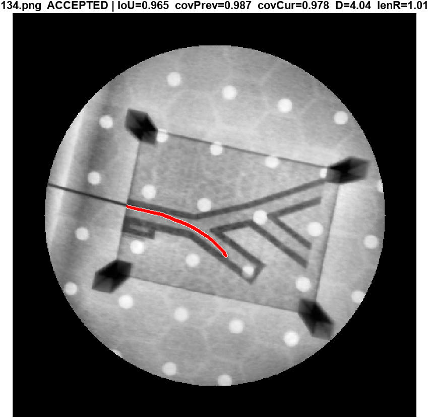

Selected Research Experience
Robotic Surgery Gap Discovery 05/2026-present

- Developed a pipeline to analyze robotic and laparoscopic surgical literature for identifying under-supported functional needs in robotic procedures.
- Introduced capability-level gap reasoning to capture surgical functions that are insufficiently supported, rather than relying only on missing instrument names.
Single-Cell Analysis of GRM5/Grm5-Associated Microglial State 03/2026-present

- Analyzed mouse and human single-cell transcriptomic datasets for the association between GRM5/Grm5 and microglial states.
- Built a Scanpy-based workflow for microglia clustering across different states.
- Applied Spearman correlation and FDR correction to identify genes associated with Grm5 and compare canonical marker programs.
Image-Guided Closed-Loop Robotic Guidewire Navigation System 09/2025-02/2026

- Design and develop a two-way bending guidewire with control platform.
- Develop a C-arm–based guidewire perception pipeline to robustly track the guidewire.
- Design and implement real-time feedback control to autonomously steer the guidewire to targets.
Soft Wearable Assistive Robots Exosuit 07/2024-09/2024

- Researched soft and bioinspired designs, models, and control methods for exosuits and prosthetic limbs.
- Took charge of improving the entire system, liaising with the health center, and collecting data to further make the wearable device more comfortable for users.
A Six-Degree-of-Freedom Soft Continuum Robot Based on the FBG Principle for Shape Reconstruction in Minimally Invasive Surgery 01/2024-06/2025

- Designed innovative miniature continuum robots by integrating cable-driven and pneumatic actuation mechanisms.
- Determined the current shape of the actuator by integrating data from FBG sensors with a model.
- Achieved independent 6 degrees of freedom; the actuator’s diameter is 10mm.
Jellyfish Amphibious Robot based on Steady State Response 06/2023-09/2024

- Simulated soft actuators of various sizes and fabrication processes, and designed jellyfish-like structure.
- Conducted mechanical performance and integrated testing of the soft actuator.
- Precisely controlled all modules, including circuits and sensors through a microcontroller; established the system control logic and improved the execution accuracy.
- Engaged in data collection, analysis, and drafting of the thesis; expected to be completed by the beginning of 2025.
A Computational Study of the Hydrodynamics of Quadrupedal Paddling – Physics of Fluids 09/2023-07/2024

- Calculated the forces, power consumption, and impact on flow fields for both single-leg and quadruped configurations across various gait patterns, including diagonal and lateral sequence gaits, along with the initial swing angle, swing range, and power phase of the legs in each gait.
- Processed large volumes of calculated data with Ubuntu Subsystem using a four-legged robot dog model.
- Made realistic renderings of fluids and solids with Tecplot.
A High Sensitivity Flexible Stretchable Fiber Optic Sensor based on the Waveguide Loss Principle – IEEE Transactions on Instrumentation & Measurement 01/2023-06/2024

- Fabricated a flexible, stretchable fiber optic sensor optimized for continuous health monitoring.
- Conducted a series of performance experiments to characterize the sensor’s ability to measure large strains, low detection limit, and high repeatability.
- Made a Human-Machine Interaction (HMI) system to translate movements into signals for interaction.
Gesture Recognition Smart Bracelet with Low Delay and Low Power Consumption based on Surface Electromyography Signal 07/2022-05/2023

- Developed solutions for various real-world problems, including: (1) detecting the weak sEMG signal on the wrist and overcoming the noise interference; (2) offline computing on the cloud end; (3) the decreased accuracy of gesture recognition due to changes in wearing style and individual differences.
- Employed array-based sEMG bracelets, adaptive recognition technology, edge computing, etc.; utilized the fine-tuning model to enhance the bracelet’s robustness.
- Established a deeper understanding of designing PCB layout; operated and deployed cloud training models, and constructed a CNN artificial intelligence network.